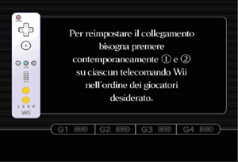

3 |
Uso del controller |
 |


Nota: se il proprio passante è dotato di una levetta di bloccaggio, premere la levetta verso il basso finché non si sente un “clic”. Ciò farà sì che il passante rimanga in posizione.
Questa procedura permette al proprio telecomando Wii di comunicare con la console. Il telecomando Wii fornito con la console è già stato sincronizzato. Vi sono due diverse procedure di sincronizzazione. Sincronizzazione standard – La sincronizzazione standard viene utilizzata per sincronizzare telecomandi Wii aggiuntivi con la console Wii o per risincronizzare il proprio telecomando Wii originale. Il telecomando Wii rimarrà sincronizzato con la console iniziale fino a quando non si esegue una nuova sincronizzazione standard con una console diversa. Sincronizzazione temporanea – Questa procedura permette di usare temporaneamente il proprio telecomando con una console diversa oppure di usare il telecomando di un altro giocatore sulla propria console. Questa procedura non ha alcun effetto sulle impostazioni relative alla sincronizzazione standard del telecomando Wii. Il telecomando Wii sarà in grado di comunicare con la console solamente finché i due dispositivi sono accesi: una volta spenti, la sincronizzazione temporanea verrà annullata. Nota: la console Wii può essere accesa e spenta solo con un telecomando Wii sincronizzato tramite la sincronizzazione standard. Sincronizzazione standard Nota: assicurarsi che le batterie siano inserite nel telecomando Wii prima di eseguire la procedura.
 Seguire questa procedura per ogni telecomando Wii che si vuole sincronizzare con la console. Nota: il numero di LED lampeggianti indica il livello di carica delle batterie del telecomando Wii.
Sincronizzazione temporanea Nota: quando si esegue questa procedura, le impostazioni della sincronizzazione standard vengono temporaneamente disattivate fino a quando non si spegne la console. Quando si riaccende la console, verrà ripristinata la sincronizzazione standard.

IMPORTANTE: se il telecomando Wii perde la sincronizzazione con la console Wii e non è possibile ripristinarla, consultare il capitolo Risoluzione dei problemi nella sezione relativa al telecomando Wii all’interno del manuale di istruzioni della console Wii: installazione.
Se il Control Stick del Nunchuk non è impostato sulla posizione neutra (*) e non si riesce a farlo funzionare correttamente, seguire queste istruzioni:

Posizione neutra del Nunchuk * Per “posizione neutra” si intende la posizione assunta dal Control Stick quando non viene inclinato in nessuna direzione. Inclinando il Control Stick in qualsiasi direzione al momento dell’accensione della console Wii o del collegamento al telecomando Wii, questa posizione verrà registrata come neutra e il Control Stick non funzionerà in maniera corretta. |
 su un telecomando Wii sincronizzato con la console.
su un telecomando Wii sincronizzato con la console.
 e
e  sui telecomandi che si vogliono sincronizzare con la console.
sui telecomandi che si vogliono sincronizzare con la console.
 ,
,  ,
,  e
e  sul telecomando Wii per circa tre secondi.
sul telecomando Wii per circa tre secondi. |
 |
 |